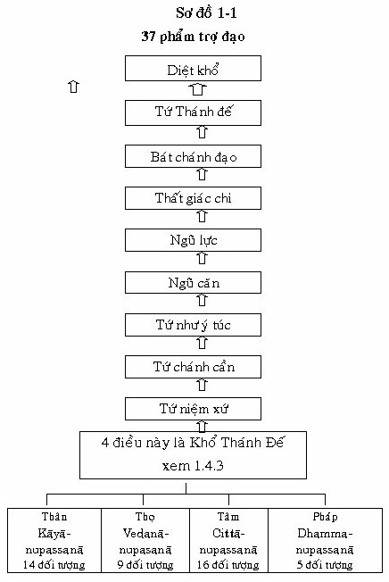
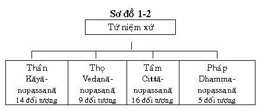

|
Giáo trình Thiền
Minh Sát Tuệ Tác giả: Thiền Sư Achaan
Naeb
Phần I LÝ THUYẾT
Dù thế nào đi nữa, tất cả loài hữu tình (con người) đã sinh ra, hoặc sẽ sinh ra, đều phải lìa bỏ xác thân và đi đến cái chết. Biết được tất cả chúng sinh đều phải ra đi như thế, bậc trí tuệ nên tu tập và sống cuộc đời đạo hạnh. -- (Udana, Tiểu bộ kinh, 25, iii, 189) ... với tấm lòng mộ đạo, nên vị này nương nhờ vào Tam bảo; gìn giữ giới cấm: không sát sanh... không uống ruợu; thực hiện lòng từ bi; quán tưởng về vô thường, do đó vị này gặt hái được những kết quả thù thắng. -- (Tăng chi bộ kinh, quyển 9) 1.1 PHẬT GIÁO Hơn 2.500 năm trước,VịThái tử Tất Ðạt Ta (Siddhattha) của vương quốc Sakiyan nhỏ bé nằm ở vùng Bắc Ấn Ðộ, vì không chịu được nỗi khổ đau mà ngài phải chứng kiến ở chung quanh mình, nên cuối cùng ngài từ bỏ vợ và đứa con trai vừa mới ra đời [1] và bắt đầu lên đường với một sự tìm kiếm đơn độc để tìm ra một chân lý hầu chấm dứt sự khổ đau. Ði theo các đạo sĩ khổ hạnh Ấn Ðộ giáo thời đó, ngài đã tìm thấy được Amatta - trạng thái Bất Tử. Tu tập cùng với một vị thầy ngài đạt đến tầng thiền thứ bảy (có tám tầng thiền: 4 sắc giới và 4 vô sắc giới). Sau đó với một vị thầy khác ngài đạt đến tầng thiền thứ 8. Nhưng rồi ngài đã sớm nhận định rằng đây chỉ là những trạng thái bất tử nhất thời, chúng hoàn toàn không thể chấm dứt khổ đau. Thế rồi ngài bắt đầu tu ép xác, sự tu tập này liên quan đến việc nhịn ăn để làm trong sạch tinh thần và nhờ đó đạt được sự giải thoát khỏi đau khổ. Ngài tu tập phương pháp này cho đến khi thân xác của ngài gần như hoàn toàn rã rời kiệt lực. Sau đó ngài từ bỏ lối tu nhịn ăn khổ hạnh bằng một bữa ăn với sữa nóng và cơm, do một cô gái vắt sữa, có tên là nàng Sujata, dâng cho ngài. Và rồi ngài đi đến sự kết luận rằng sự dục lạc quá mức và tự hành xác quá mức không phải là con đường giác ngộ: Con đường giác ngộ chính là Con đường Trung Ðạo (Majjhima Patipada). Ðêm hôm ấy, khi nhập thiền, ngài khám phá Tứ Diệu Ðế và đã giác ngộ. Ngài được ca tụng là "Samma-sambuddhassa" -- bậc chánh đẳng chánh giác, tự mình giác ngộ. Ngày nay, trên khắp thế giới, một số người Nam Nữ không ngừng gia tăng mức sống và sự giàu có, tuy nhiên chẳng bao giờ cảm thấy thỏa mãn, và đang hướng đến những phương pháp điều trị của Tứ Diệu Ðế và Bát Chánh Ðạo. Ðức Phật Gotama (Cồ Ðàm) đã giữ vững giáo pháp của mình qua 45 năm mà ngài chỉ dạy một điều duy nhất "khổ và diệt khổ" Ngài không quan tâm đến việc suy đoán như là có phải vũ trụ bất diệt hoặc khổ hoặc những điều bí ẩn tương tự khiến cho những triết gia khó hiểu - mặc dù ngài đã thật sự thừa nhận là vật chất, chứa đựng những sinh vật đó là danh và sắc (nāma và rūpa), hoặc năm uẩn (khandha). Không có một cái ngã hoặc linh hồn nơi thần thánh hoặc con người mà ngài có thể tìm thấy, hoặc phù hợp với hệ thống vật chất của ngài. Thật vậy, người ta có thể định nghĩa sự tu tập của Ðạo Phật bằng định nghĩa đơn giản là sự nhận biết thân và tâm, như là những trạng thái thay đổi liên tục. Do kết quả của sự việc này, hơn hai ngàn năm theo dõi tiến trình thân tâm, người ta đã có được một kho tàng thông tin rộng lớn đã được chấp nhận (ngay cả một số dữ kiện mới được khám phá gần đây trong việc nghiên cứu về giấc mơ ở thế giới Phương Tây, mà người Phật tử đã biết cách đây hàng ngàn năm trước) 1.1.1 Phật giáo là gì? 1- Lời giới thiệu Ðạo Phật thật sự không phải là chùa chiền, hoặc những tượng Phật, cúng dường hoặc nghi lễ. Trong khi tất cả những điều này đều xứng đáng, nhưng chúng không đáp được câu hỏi. Ðạo Phật theo nghĩa chính xác là gì? Nếu chúng ta nói rằng Ðạo Phật đích thật là sự tu tập Thiền nên sử dụng chánh niệm và sự hiểu biết sâu sắc rõ ràng để nhận ra trí tuệ, và nhờ vậy đoạn trừ tất cả phiền não, và chấm dứt khổ - Chúng ta đang đến gần. Nhưng chúng ta vẫn chưa đến đích. Nếu chúng ta nói rằng Phật giáo đích thật là danh (nāma) và sắc (rūpa) - như vậy chúng ta đang tiến gần hơn một chút nữa; nhưng ngay cả điều này chưa hoàn toàn thỏa mãn. Từ ngữ danh "Nāma" vẫn có thể mang ý niệm của một cái tâm là cô kết lại, tất cả thành một khối, thực hiện tất cả những chức năng tinh thần khác nhau này để đem lại một bức tranh đúng thật hơn của tâm, danh cần phải được diễn tả như là những trạng thái tâm (citta) [2] mỗi trạng thái sinh khởi riêng rẽ, và nó khác biệt với nhau: trạng thái tâm thấy không giống như trạng thái tâm nghe, trạng thái tâm đang vẩn vơ thì khác với trạng thái tâm đang quan sát thân (rūpa) trong khi tu tập, v.v... "Chúng tôi" sự hiện hữu trọn vẹn của chúng ta, ở bất cứ thời điểm nào được ấn định hoàn toàn là sự phát sinh của một trong những trạng thái tâm này, nó nhanh chóng được thay thế bởi một cái khác. Nhưng trạng thái tâm (citta) vẫn chưa đủ. Các trạng thái tâm (citta) thật sự tạo nên 52 tâm sở, được gọi là sở hữu tâm (cetasika), ví dụ, xúc, thọ, tưởng v.v... là tâm sở, như vậy định nghĩa đúng nhất của Danh chính là tâm sở-cetasika. Bây giờ chúng ta có thêm Sắc pháp- sắc pháp cho định nghĩa thực tế của Phật giáo, và vì vậy chúng ta có Tâm,sở hữu và sắc pháp. Nhưng tâm, sở hữu tâm và Sắc pháp vẫn chưa phải là "một bức tranh" trọn vẹn. Nếu chúng ta tu tập thành công (nhận ra Danh và Sắc không phải là "chúng ta") là chúng ta đạt đến một trạng thái mà ở đó một khoảnh khắc (sát na) đạo ngắn ngủi phát sinh đoạn trừ tất cả những phiền não. Khoảnh khắc đạo đó là Níp bàn, và Níp bàn này cũng là thành phần vô cùng quan trọng trong Phật giáo . Như vậy, định nghĩa cuối cùng của chúng ta về thực chất của Phật giáo trở thành thân tâm và giác ngộ - hoặc để phát triển về nó trong ngôn ngữ Pali, ngôn ngữ của Phật giáo: Tâm, sở hữu, sắc pháp và Níp bàn. Trong đạo Phật, bốn yếu tố này là sự thật tuyệt đối(chân đế) . Ðiều này có nghĩa chúng là những điều ở trong vũ trụ là "thật" - nghĩa là chúng không đòi hỏi những khái niệm để hiểu biết. Như vậy, mọi sinh vật ở trong vũ trụ được tạo nên từ ba yếu tố đầu tiên của những yếu tố này - Tâm, sở hữu, sắc pháp và Níp bàn - là đối tượng của khoảnh khắc diệt trừ phiền não một trong bốn tầng giác ngộ - là phần thứ tư của sự thật tuyệt đối: Tâm, sở hữu, sắc pháp và Níp bàn (điều quan trọng để biết rằng Níp bàn chỉ là một đối tượng của tâm ở một giai đoạn trí tuệ nào đó - Nó thật sự xuất hiện như là một khoảnh khắc an lạc và vắng lặng rất ngắn ngủi - và bản chất của nó là không có phiền não). Mục đích trong đạo Phật về ba yếu tố đầu tiên: Tâm, sở hữu, sắc pháp và Níp bàn (citta, cetasika, rūpa, Nibbāna) là để chứng minh rằng "chúng ta" thật sự được tạo nên bởi nhiều phần tử (những trạng thái thân tâm (danh và sắc) thay đổi rất nhanh và liên tục), và bởi vì không có một thành phần nào trong những thành phần này là "chúng ta", những thành phần này kết hợp lại với nhau cũng không phải là "chúng ta". Khoa tâm lý học trong đạo Phật phân chia thân và tâm thành những thành phần rất nhỏ được gọi là Vi Diệu Pháp (Abhidhamma): khoa tâm lý học này giúp cho mọi người nhận thức rõ ràng hơn "chúng ta" không phải là đàn ông, đàn bà, tất cả đều là vô ngã v.v... Như vậy, định nghĩa đầu tiên của chúng ta về Phật giáo nghĩa là sự thật tuyệt đối: Tâm, sở hữu, sắc pháp và Níp bàn là Phật giáo - Phật giáo đích thật. Mọi chúng sanh trong thế giới đều định nghĩa bằng thân tâm này (citta - cetasika - rūpa) Những vật vô tri giác chỉ là vật chất (rūpa). Thậm chí những người không biết định nghĩa này, có thể chưa bao giờ nghe nói đến Ðạo Phật, họ vẫn tồn tại như một trạng thái mà Tâm, sở hữu có thể đạt tới khi tâm có được sự trong sạch hoàn toàn. Bây giờ, sau khi đã hiểu được sự giải thích đơn giản về đạo Phật đích thật này, với niềm hy vọng, chúng ta có thể tiến bộ với một chút tin tưởng hơn với sự thảo luận đầy kỹ thuật hơn của vị thầy chú ý về chủ đề quan trọng này, được mô tả ở những đoạn sau đây. 2- Thảo luận Phật giáo có thể định nghĩa bằng hai con đường: 1) Trạng thái thật
về bản chất của thế gian, và tự nhiên 1) Trạng thái thật về bản chất tự nhiên của thế gian Ðức Phật dạy "Sabbha dhamma anatta" Câu này có nghĩa chính xác là "tất cả các pháp (sự vật) đều vô ngã". Như vậy, chúng ta có thể nhận thấy rằng 4 thành phần của sự thật tuyệt đối trong thế gian. Tâm, sở hữu, sắc pháp và Níp bàn, tất cả đều có chung một đặc tính duy nhất: chúng đều vô ngã. Bốn thành phần này là trạng thái thật về bản chất tự nhiên của thế gian (sabhava dhamma) - nghĩa là, không có ngã, không có đàn ông, đàn bà, không có con chó v.v... vô ngã là yếu tố duy nhất của Tam Tướng (Vô thường, khổ và vô ngã) nó phù hợp với tất cả 4 thành phần của sự thật tuyệt đối. Bởi vì Níp bàn là pháp siêu thế: trường tồn, và hạnh phúc, nhưng vô ngã. Tâm, Sở hữu và Sắc pháp là tục đế: vô thường, khổ và vô ngã. a) Mọi người đều có ba trong 4 thành phần nêu trên: Tâm, Sở hữu và Sắc pháp. Hoặc bốn thành phần này có thể nói tóm lại là thân và tâm (danh và sắc) . Hoặc chi tiết hơn, người ta có thể chia chỉ thành 5 phần được gọi là ngũ uẩn: sắc, thọ, tưởng, hành và thức. Ba thành phần này Tâm, sở hữu vàsắc pháp tiếp tục trên bánh xe sinh tử đó là vòng sinh, lão, bệnh và tử. Ba điều này xảy ra bởi nhân và duyên: chúng luôn luôn lệ thuộc vào nhau (ví dụ, thân không thể hành động mà không có tâm, tâm thì vô dụng nên không có thân); và chúng sinh và diệt ngay lập tức, liên tục một cuộc sống. Sự kiện này xảy ra từng khoảnh khắc (sát na), và bởi vì nó xảy ra dù chúng ta có nhận biết về nó hay không, nó được gọi là thế tục. Trạng thái thật của bản chất tự nhiên (sabhava) không xảy ra với Chư Thiên, Phạm thiên hoặc bất cứ sự can thiệp kỳ diệu nào. Năm uẩn, hoặc thân - tâm là khổ đế (dukkha-sacca) (sacca có nghĩa chân lý, như vậy dukkha-sacca là khổ đế - Ðế thứ nhất của Tứ diệu đế. Năm uẩn là khổ đế (dukkha- sacca) và chúng là quả của nhân. Nhân đó là tham ái, như đã được nêu lên đế thứ hai (Tập đế), chân lý của nhân khổ đế. Người thật sự tạo nên Danh và Sắc là phiền não. Trong tu tập, phiền não là ái dục, hoặc những phiền não là tham, sân và si. Nó chỉ là tứ phiền não mà thân và tâm được tạo nên. Thân và tâm này (ngũ uẩn) là những gì chúng ta thường nghĩ đến là đàn ông, đàn bà, hoặc người này, người kia hoặc quốc gia này, quốc gia nọ. Ðiều này "tạo nên" phiền não và điều đó được tạo nên (Ngũ uẩn) có tam tướng: - vô thường, khổ và vô ngã và chúng là định luật tự nhiên. Sự việc này không có sự ngoại lệ nào cho bất chúng sinh nào. b) Tuy vậy, Níp bàn là pháp chân đế và nằm ở ngoài Năm Uẩn - có nghĩa là ở ngoài "thế gian" (Ðức Phật dạy rằng, đối với mỗi chúng sinh "thế gian" thật sự là năm Uẩn, bởi vì mọi vật chúng ta cảm nhận từ chúng. Thế gian này có thể gọi là "thế gian - ngũ uẩn hoặc thế gian Danh sắc") Níp bàn là đối tượng của khoảnh khắc đoạn trừ phiền não, từ đó chấm dứt khổ - điều này xảy ra ở tuệ 14 của 16 tuệ Thiền Minh Sát (yana) - và quả, hoặc, đi theo nó (tuệ thứ 15). Níp bàn được gọi là siêu thế bởi vì nó là pháp dập tắt phiền não và từ đó chấm dứt khổ. Níp bàn là trường tồn và hạnh phúc. Nhưng nó không phải là đàn ông, đàn bà - vô ngã. Ðây là Phật giáo thật sự, Thái tử Siddhatha đã tự mình khám phá trí tuệ đó là Tứ Diệu Ðế. Chẳng ai dạy ngài. Kể từ đó, ngài được mọi người gọi "Pra Arahant - Sammasambuddha" - "Bậc A-la-hán Chánh đẳng Chánh giác". 2) Giáo pháp của Ðức Phật Ðây là con đường thứ hai mà người ta có thể định nghĩa về Phật giáo. Giáo pháp của Ðức Phật đem lại lợi ích qua ba hình thức, dựa vào một trong ba hình thức này để thích nghi với cá tính đặc biệt của mình. a) Lợi ích cho
kiếp này Một ví dụ của phần (a) trên là giáo lý về việc không nên nóng giận, Ðức Phật dạy không căm thù "Ðừng làm tổn thương tâm của mình". Giận hờn chỉ làm tổn thương bản thân, chứ người khác thì không. Một ví dụ của phần (b) ở trên là giáo lý liên quan đến giới luật và sự phát triển tập trung (định) trong lúc hành thiền. Về phần (c) ở trên đức Phật dạy về con đường để đạt Níp bàn - Một loại hạnh phúc không còn biến thành khổ đau nữa, ở đó hạnh phúc và khổ đau hòa trộn với nhau. Ở phần thảo luận này chúng ta sẽ chỉ thảo luận về níp bàn để diệt khổ. Sự đau khổ thật sự là Ngũ Uẩn, hoặc thân tâm cuối cùng khi Năm uẩn hoàn toàn bị tâm diệt, hoặc đã đạt được Níp bàn. Một điển hình của điều này là Ðức Phật, và những bậc giác ngộ hoàn toàn (A la hán) vào thời Ðức Phật. Họ sẽ không bao giờ tái sinh nữa để gặp phải khổ đau. Và Ðức Phật dạy phương pháp nào để diệt khổ? Ngài dạy Giới, Ðịnh và Tuệ trong Bát Chánh Ðạo. Tại sao phải là Giới, Ðịnh, Tuệ trong Bát Chánh Ðạo? Bởi vì ba yếu tố này khi ở trong bát chánh đạo là (con đường) Trung Ðạo, nó cần thiết để đạt được Tứ Diệu Ðế. Bát Chánh Ðạo được gọi là Trung Ðạo, và "chỉ có một và con đường duy nhất" để đạt được Tứ Diệu Ðế và diệt khổ. Trung Ðạo có nghĩa là cực đoạn dục lạc và ép xác mà đức Phật nhận ra ở các đạo sĩ Ấn giáo vào thời của ngài - Những đạo sĩ này cho rằng việc tu ép xác sẽ tiêu diệt ham muốn và sự bê tha dục lạ sẽ tiêu hủy hận thù. Con đường Trung Ðạo cũng có nghĩa tránh sự muốn hoặc không ham muốn. Lợi ích của sự nhận thức được Tứ Diệu Ðế là gì? Lợi ích đó là sự chấm dứt khổ (diệt khổ). Việc này xảy ra khi khoảnh khắc Ðạo có Níp bàn đối tượng của nó để tận diệt tất cả phiền não còn sót lại và chấm dứt khổ (Ðạo thứ tư). Níp bàn rất hạnh phúc vì không có tái sinh. Chúng ta hiểu ý nghĩa rất hạnh phúc là gì? Loại hạnh phúc này không còn biến thành khổ đau nữa, giống như hạnh phúc thế tục. Ðức Phật dạy "Níp bàn rất hạnh phúc". Hạnh phúc này xảy ra như thế nào? Bởi vì Níp bàn không có 5 uẩn. 5 uẩn là chân đế của khổ (dukkha sacca). Nếu chúng ta không có 5 uẩn, chúng ta không còn chút khổ đau nào - chẳng hạn như lão, bệnh, tử, buồn phiền, than oán v.v... Cho nên Níp bàn là hạnh phúc. Nó không giống thế tục, Níp bàn là nơi hạnh phúc và khổ đau hòa trộn với nhau. Níp bàn là sự tốt lành nhất trong Phật giáo. Giới, Ðịnh và Tuệ thì bao gồm Bát Chánh Ðạo. Thành phần nào có trước? Chúng ta nên tu tập giới cho đến khi được trong sạch, và nhận thức định và tuệ sau đó? Giới, Ðịnh, Tuệ trong Bát Chánh Ðạo phải đi cùng một lúc chứ không phải hết phần này đến phần khác. Nó giống như viên thuốc với 3 thành phần: Chúng ta phải uống chúng cùng một lúc. Loại thiền định (samādhi) là an lạc cùng với trạng thái hoan lạc - đặc biệt đối với những ai đạt đến an chỉ định (một trạng thái định rất cao). Nó rất hạnh phúc. Như vậy tại sao chúng ta nói duy nhất Níp bàn là hạnh phúc? Trong khi thiền định là thiện; trạng thái tốt đẹp và nó đi tận diệt các phiền não của tâm (những trở ngại); nó chỉ an lạc tạm thời, chỉ tồn tại cho đến khi những trở ngại còn bị kiềm chế. Hạnh phúc này tùy thuộc vào mức độ An chỉ định. Nhưng loại hạnh phúc này vẫn còn trong vòng đau khổ. Tham thiền đạt đến trạng thái an chỉ định có trước thời Ðức Phật. Ðức Phật tu tập phương pháp thiền chỉ này (samādhi) cho đến khi ngài đạt được trạng thái an chỉ định cao nhất (tầng thứ 8) nhưng ngài nhận ra rằng trạng thái an chỉ định đó không thể tận diệt những phiền não tiềm ẩn. Sau đó ngài tìm ra được Bát Chánh Ðạo, và nhận thức được Tứ Diệu Ðế - và như vậy là Ngài đắc đạo. Rồi ngài tuyên bố,"Ðây là kiếp sống cuối cùng của Như Lai. Và như vậy, ngài giác ngộ (Níp bàn đoạn diệt phiền não và từ đó không còn khổ đau - và chấm dứt vòng sinh tử luân hồi - chúng ta nói chỉ có Níp bàn là hạnh phúc. Trong tất cả những nền triết học thế giới, trí tuệ để chấm dứt khổ đau chỉ được người ta tìm thấy ở trong Ðạo Phật. Làm cách nào để chúng ta chứng minh được điều này. Theo đúng con đường Bát Chánh Ðạo để tận diệt những phiền não là nhân của khổ. Phiền não chỉ có thể đoạn diệt bằng trí tuệ. Khi sự tu tập hoàn thiện, trí tuệ phát triển và nhờ trí tuệ này (tuệ giác hoặc tuệ Thiền Minh Sát) diệt trừ phiền não. Chỉ có Phật giáo mới có thể diệt trừ toàn bộ phiền não - nghĩa là đạt Níp bàn. Ðây là sự biểu thị mà sự tu tập Bát Chánh Ðạo phát triển trí tuệ. Những câu hỏi cuối cùng liên quan với chủ đề quan trọng của Níp bàn. a) Níp bàn là gì? (Nghĩa là, nếu chúng ta tin tưởng có Níp bàn tồn tại) Ðây là những câu hỏi tốt đẹp để chất vấn, vì rằng tất cả Phật tử đều muốn chấm dứt khổ. Ðể chấm dứt khổ chúng ta phải đạt Níp bàn. Chúng tôi sẽ trả lời ngắn gọn những câu hỏi này, nhưng khi chúng ta tu tập thành công, chúng ta sẽ hiểu sâu sắc hơn. a) Níp bàn là gì? Níp bàn là đối tượng của một khoảnh khắc đạo ngắn ngủi. Níp bàn là thực thể tối cao, hoặc trạng thái thật của bản chất vạn vật. Khoảnh khắc này có Níp bàn là đối tượng, tận diệt phiền não và chấm dứt khổ. Khổ là "chúng ta" (rūpa-nāma). Nếu không có "chúng ta" (nāma-rūpa) không có khổ chẳng hạn như lão, bệnh và tử v.v...¸ - vì không có 5 uẩn trong trạng thái Níp bàn. Năm uẩn là khổ đế (dukkha sacca). Mỗi người chúng ta được tạo nên bởi ngũ uẩn: Sắc, thọ, tưởng, hành và thức. Hoặc đơn giản hơn, Năm uẩn này là sắc (rūpa) và danh (nāma). Phần thứ tư của 5 thành phần trên là thức. Năm uẩn là khổ đế, hoặc đế thứ 1 của Tứ Diệu Ðế. Khổ đế hiện hữu nhưng chúng ta thường không trông thấy nó. Nó được tạo nên bởi phiền não (kilesa) và tham ái này tạo nên chúng ta. Phiền não đó tạo nên chúng ta ở với chúng ta lâu dài - trừ phi làm một điều gì để chấm dứt nó. b) Níp bàn ở đâu? Níp bàn không phải là một nơi chốn. Nó không ở bất cứ nơi nào. Không một ai, ngay cả không có người nào có thần thông có thể nói Níp bàn ở chỗ nào. Níp bàn không phải là thiên đường; nó giống như gió: chúng ta chỉ biết được nó bằng những tác động của nó. Níp bàn là đối tượng của một khoảnh khắc đạo rất đặc biệt. Nó là một đối tượng tâm của khoảnh khắc đạo này. Một người bình thường bị chìm đắm trong phiền não, như khi vị này thực hành thiền Thiền Minh Sát và tuệ minh sát xuất hiện, tâm của vị này trở nên trong sạch. Ðiều này được gọi là khoảnh khắc đạo hoặc quả. Hai hình thức này có Níp bàn làm đối tượng (tuệ thứ 14 và 15 của 16 tuệ minh sát. Níp bàn không phải là tâm. Nó chỉ là đối tượng của tâm. Khi tuệ Thiền Minh Sát rất mạnh mẽ, tâm của người bình thường chuyển sang tâm của Bậc Cao Thượng. Sự thay đổi này được gọi là khoảnh khắc đạo. Nó được đi theo ngay bằng quả đạo. Cả hai đều có Níp bàn là đối tượng của chúng. Khi nhân của khổ bị đoạn diệt, khổ (quả) bị đoạn diệt bởi khoảnh khắc đạo đặc biệt cho đạo đó. Bốn đạo đi đến giác ngộ là nhập lưu, nhất lưu, bất lưu và A la hán. Có mười sự trói buộc (kiết sử) khiến cho chúng ta không đạt được giác ngộ trọn vẹn: 1. Thân kiến 4. Tham dục (Sự hiện hữu của ái sắc là một sự hiện hữu ở đó vẫn có Thân. Sự hiệu hữu vô sắc ở đó chỉ có Danh. Như vậy cả hai sự trói buộc này (6 và 7) đề cập đến những loại hiện hữu thuộc cõi trời) 8. Ngã mạn Như vậy, đối với Ðạo thứ nhất khoảnh khắc đạo Nhập lưu đoạn diệt 3 sự trói buộc đầu tiên; đối với Ðạo Thứ Hai, khoảnh khắc đạo nhất lại làm yếu đi hai sự trói buộc kế tiếp; đối với Ðạo Thứ Ba, khoảnh khắc đạo bất lai đoạn diệt hai sự trói buộc bị yếu đi; và đối với Ðạo Thứ Tư, khoảnh khắc đạo A la hán đoạn diệt 5 sự trói buộc còn lại. c) Chúng ta sẽ nhận thức Níp bàn bằng cách nào? Ðể nhận thức được Níp bàn, chúng ta phải tu thập Thiền Tứ Niệm Xứ (Satipaṭṭhāna) đúng phương pháp. Nếu tu tập đúng Tứ Niệm Xứ là con đường duy nhất dẫn đến giác ngộ. Ðức Phật dạy: "Này chư tỳ khưu con đường này (được trình bày trong bài kinh Ðại Niệm Xứ (Mahasatipathana) là một con đường và con đường duy nhất để thanh lọc tất cả chúng sinh. Satipaṭṭhāna là đầu tiên, và nền tảng của 37 phẩm trợ đạo đóng góp cho sự giác ngộ. Và 37 phẩm chất dẫn đến sự nhận thức Tứ Diệu Ðế, như đức Phật đã thực hiện. Khi tâm đã thanh lọc phiền não, chúng ta sẽ tự mình chứng ngộ - chúng ta không cần đến bất cứ ai chỉ bảo - bởi vì Níp bàn là bản chất thật (sabhava) và điều này do tự mình chứng ngộ. Trong câu kệ của Chư Tăng, đây là "Paccatan veditabbo vinnuhi" "hãy tự mình nhận thức bản thân). 1.2. NHỮNG GIAI ÐOẠN TUỆ GIÁC Ðức Phật đã trải qua ba giai đoạn này khi ngài nhận thức ra Tứ Diệu Ðế. Ngài đã tự mình chứng ngộ ba giai đoạn tuệ giác, bởi vì không có vị thầy nào chỉ dạy ngài. 1.2.1 Tuệ thật (Cacca-ñāṇa) Ở giai đoạn trí tuệ đầu tiên, được gọi Tuệ thật- sacca-ñāṇa, ngài nhận thức được: 1. Khổ đế (Dukkha Sacca) có 11 loại: sinh (có 5 uẩn) già (có 5 Khandha) chết (có 5 Khandha), sầu, bi, khổ (thuộc thân) ưu (thuộc tinh thần) não, gần người không thích,xa cách người thương mến, cầu mà không được. Tất cả đau khổ đều bị dính mắc là bởi vì năm uẩn tạo thành (Khandha). 2. Tập đế (Samudaya Sacca): Kammatanna (ái dục), bhavantaṇhā (ái trong sắc), vibhanvataṇhā (ái trong vô sắc) -- (Xem "Tứ Diệu Ðế" 1.4.5) 3. Diệt đế (Nirodha cacca): diệt đế là Níp bàn, là pháp tận diệt Tập đế (sanmadayya sacca). Khi nhân bị đoạn diệt thì quả cũng vậy. 4. Ðạo Diệt Ðế (Magga Sacca): Bát Chánh Ðạo là con đường Trung Ðạo (Majjhima patipada) và sự tu tập độc nhất có thể đạt đến Diệt Ðế. 1.2.2. Tuệ hành (Kicca-ñāṇa) Ðây là sự tu tập thực sự dựa vào giai đoạn thứ 1. Khổ đế, phải được nhận thức bằng sự tu tập này; Tập đế, cần phải tận diệt bằng cách tu tập. Diệt đế, cần phải đạt đến bằng cách tu tập. Ðạo đế, cần phải phát huy bằng cách tu tập. 1.2.3. Tuệ quả (Kata-ñāṇa) Kata-ñāṇa là quả, hoặc sự hiểu biết về điều cần được thực hiện về Tứ Diệu Ðế. Ba tuệ (sacca-ñāṇa, kicca-ñāṇa, kata-ñāṇa) được gọi là "Ba tri kiến và tuệ giác" - Ba khía cạnh sự hiểu biết qua trực giác về Tứ Diệu Ðế. Ðức Phật đã trải qua ba giai đoạn của Tứ Diệu Ðế vào đêm Ðắc Ðạo (4 x 3 = 12 mà ngài đã trải qua). Sau đó ngài nhận ra ba tuệ (sacca-ñāṇa, kicca-ñāṇa, kata-ñāṇa), mỗi lần với Tứ Diệu Ðế. Hành giả muốn diệt khổ giống Phật, phải hiểu tuệ thứ nhất (sacca-ñāṇa) sau đó tuân theo sự tu tập và hiểu được sự tu tập (kicca-ñāṇa). Sau đó hai tuệ phải kết hợp với nhau, khi chúng ta đang thực hiện sự tu tập hiện nay. Nếu quý vị nhận thức tuệ đầu tiên (sacca-ñāṇa), và tu tập tầng tuệ thứ hai (kicca-ñāṇa), sau đó những lần với Tứ Diệu Ðế chúng ta có 4 x 2 = 8 đó là ở nơi mà sự tu tập Thiền quán -Thiền Minh Sát của chúng ta bây giờ. Nếu quý vị nhận ra kết quả (kata-nan), đó là 4 x 3 = 12, Tứ đế x 3 khía cạnh = 12 phương thức, ở điểm mà hành giả đạt đến là lokuttara dhamma (pháp siêu thế). Trong bài pháp đầu tiên sau khi đắc đạo "Kinh chuyển pháp Luân", Ðức Phật đã mô tả Ba giai đoạn Trí Tuệ như sau: "Này chư tỳ khưu, cho đến ngày nào mà tri kiến về tứ thánh đế cùng với 3 khía cạnh và 12 phương thức mà Như Lai chưa làm sáng tỏ bản chất thật của chúng thì cho đến lúc ấy Như Lai vẫn chưa xác nhận rằng Như Lai đã chứng ngộ Vô thượng Chánh đẳng Chánh giác trước thế gian gồm chư Thiên, Ma Vương, Phạm Thiên với các chúng Sa môn, Bà là môn, Trời và Người. Này chư tỳ khưu, nhưng khi nào tri kiến về tứ thánh đế, cộng với 3 khía cạnh và 12 phương thức đã được Như Lai làm sáng tỏ bản chất thật của chúng thì đến lúc ấy Như Lai mới xác nhận trước thế gian gồm Chư Thiên, Ma Vương và Phạm Thiên giữa các chúng Sa môn; Bà La Môn, Trời và Người, rằng Như Lai đã chứng ngộ Vô Thượng Chánh Ðẳng Chánh Giác". Vả lại tri kiến phát sanh đến Như lai: "Ðối với Như lai, tâm giải thoát hoàn toàn, đây là đời sống sau cùng, không còn tái sanh nữa"-- Tạng Luật, IV, 16, 21 1.3. BA MƯƠI BẢY PHÁP BỒ ÐỀ PHẦN
Quá khứ không truy tìm
Pháp Bồ đề phần là gì (Bodhipakkhiya dhamma)? Bodhipakkhiyadhamma là 37 phẩm trợ đạo góp phần cho sự giác ngộ. 37 phẩm trợ đạo này dẫn dắt hành giả đến Tứ Diệu Ðế, bắt đầu với Satipaṭṭhāna (Tứ Niệm Xứ) - là 4 thành phần đầu tiên của 37 phẩm trợ đạo và kết thúc với Bát Chánh đao.
1.3.1. Niệm xứ (Satipaṭṭhāna)
Satipaṭṭhāna, thiền tứ niệm xứ là một phương pháp tu tập được sử dụng ở hầu hết các phương pháp thiền ngày nay và được Ðức Phật mô tả như sau: Này chư tỳ khưu! chỉ có một con đường và con đường duy nhất dẫn đến sự hoàn thiện của con người, để vượt qua sầu, bi, khổ, ưu não để đạt được chánh đạo, chứng ngộ Níp bàn, đó là Tứ Niệm Xứ -- (Trường Bộ Kinh, Satipaṭṭhāna Sutta) Bốn đối tượng hoặc 4 nền tảng của chánh niệm được đề cập là: Thân (kāya) thọ (vedanā), tâm (citta) và pháp (dhamma)  1. Ðối tượng: quán sát oai nghi ngồi - trong 1 bản ngã 2. Người quan sát: Tinh cần (atapi), Chánh niệm (sati), Tỉnh giác (sampajanna) đây là Tứ niệm xứ thật sự (Ðây là giới, định, tuệ và Bát Chánh Ðạo) 3. Mục đích: tận diệt ham muốn và không ham muốn (abijjha và domanassa) trong 5 uẩn 4. Lợi ích: tận diệt Si mê, nhận thức Tứ Diệu Ðế và chấm dứt khổ Ðể tu tập Tứ Niệm Xứ là giống như tu tập Bát Chánh Ðạo. Hoặc ngược lại: nếu quý vị tu tập Bát Chánh Ðạo thì quý vị tu tập Tứ Niệm Xứ - bởi vì Tứ Niệm Xứ và Bát Chánh Ðạo là Trung Ðạo. (Ðức Phật dạy tất cả 37 phẩm trợ đạo là con đường Trung đạo) Tứ Niệm Xứ là căn bản của cơ cấu 37 phẩm trợ đạo, những thành phần này dẫn đến tuệ quán và giải thoát khỏi đau khổ.  Có 44 đối tượng Niệm xứ. Mỗi đối tượng có thể dẫn đến đạo A La Hán. Ví dụ Ananda trở thành bậc Thánh A la hán ở đề mục niệm thân - Kāya-anupassanā, (tiểu oai nghi) (Vị này trong quá trình đang nằm xuống, khi ấy sự giác ngộ diễn ra. 1- Những vật cần thiết của niệm xứ a) Phải có thân,
thọ, tâm hay pháp là một đối tượng 1. Thân (kāya) "Thân trong thân" (trong niệm xứ): Chỉ nhìn một điều ở trong mỗi đối tượng thiền. Khi quý vị nhìn vào thân, chỉ thấy thân trong niệm xứ, không có tâm biết đến nó. Ðây là sự quán sát danh và sắc cùng một thời điểm, và nó không phải là một sự tu tập tốt. Ví dụ, đừng lẫn lộn thân với thọ, thân với tâm hoặc thân với pháp. Chỉ nhận thấy thân trong thân, thọ trong thọ v.v... Nếu quý vị pha trộn các đối tượng khác nhau (nó giống như đọc một trang sách, cuốn này và sau đó một trang của cuốn sách khác v.v... Làm như thế, quý vị không thể hiểu ý nghĩa của cuốn sách đó. Nó giống như việc tu tập. Quý vị phải tu tập theo kinh Ðại Niệm Xứ . Thật sự rất khó khăn để nhận thức được sabhava (không có ngã trong sắc pháp và danh pháp) bất cứ phương pháp nào khác. 2. Thọ (vedanā) Ðừng quán sát thọ trong sắc pháp. Chỉ quán sát trong thọ. Ví dụ, khi sắc pháp có sự đau đớn, đừng quán sát danh pháp để biết sự đau đớn. Ðiều này có thể dẫn đến những điều rắc rối. Thọ là một đối tượng của niệm xứ, có thể gặp khó khăn bởi vì có 9 loại cảm thọ-kể cả trung tính, thật khó để nhận biết 3. Tâm (citta) Có 16 loại niệm tâm: Tâm có tham, tâm không tham; tâm có sân, tâm không sân; tâm có si, tâm không si; tâm có tham dục (raga) v.v... 4. Pháp (dhamma) Có 5 loại niệm pháp: 1. Năm chướng ngại
(ngũ triền cái) 2- Niệm thân (Kāyanupassanā) Có 14 loại niệm thân, nhưng sự tu tập này chỉ sử dụng có hai loại: oai nghi thân chủ yếu và thứ yếu. Bắt đầu hành giả chỉ nên sử dụng oai nghi thân - trong những oai nghi chủ yếu và thứ yếu - bởi vì thân thì dễ dàng hay biết danh pháp hơn . Sau đó, khi sắc pháp được nhận thức rõ ràng không có chút phiền não, và tuệ minh sát (Thiền Minh Sát) xuất hiện, quý vị cũng sẽ thấy danh pháp (nó giống như lau chùi một tấm gương soi cho tới khi nó thật sạch; như vậy quý vị có thể nhận thấy dễ dàng). Hơn nữa, niệm thân thích hợp tính khí (carita) của người thời nay (xem các Ðối Tượng Thiền dành cho Những Mẫu Người Khác Nhau) ở các oai nghi chủ yếu và thứ yếu, người ta dễ dàng nhận thấy khổ đau bị che giấu hơn ở những loại niệm thân khác (Ðức Phật dạy chúng ta quên đi sự nhận biết về uy nghi thân mà nó che giấu khổ đau). Về 14 loại niệm thân, chỉ có 3 là Minh sát thật: Các oai nghi chủ yếu và thứ yếu và các thành phần của thân 3- Tác ý và thực hành (Yosino và Sikkhati) Ngoài các loại trên, có hai phần hỗ trợ quan trọng cho sự tu tập: tác ý manasikara (có liên hệ với sự biết được lý do cho việc thực hiện các hành động, và ngăn ngừa (phiền não - kilesa) và sikkhati (dùng để quán sát có phải sự tu tập đúng hay sai). Sự tu tập đúng đắn với hai phần này sẽ tạo nên sự nâng cao cho người hành giả-Yogāvacara (nhiệt tâm, chánh niệm và tỉnh giác) và cuối cùng dẫn đến giác ngộ Níp bàn, sẽ chấm dứt khổ. 4- Các đối tượng thiền Các đối tượng của sự tu tập này là các oai nghi chủ yếu và thứ yếu (thứ yếu là sắc pháp, giúp đỡ oai nghi chủ yếu để chuyển động v.v.. thay đổi các oai nghi) . Niệm xứ thật sự là 3 Danh pháp: Nhiệt tâm, chánh niệm và tỉnh giác. Như lý tác ý và thực hành. Bổn phận chính của niệm xứ là tận diệt tham muốn và không ham muốn (xem chi tiết, ở phần Ī, thực hành). Các đề mục thiền đối với những mẫu người khác nhau:
Lưu ý: 1. Ái dục dùng
thân bởi vì thân dễ dàng hiểu rõ. Lại nữa, nó dơ bẩn, ghê sợ, và giúp để
thay đổi tà kiến (Vipallāsa)
[3] cho là thân
là xinh đẹp v.v... 5- Thực hành để đoạn tận phiền não 1. Một nơi lợi ích- để tu tập là một nơi yên tĩnh; lại nữa, không thuộc sở hữu của bất cứ ai, như vậy không có phiền não về sự chấp thủ. 2. Pháp thì phải thích hợp với tính khí của hành giả: như người tham ái và trí tuệ yếu kém nên tu tập đề mục niệm thân v.v... 3. Thiền sư thích hợp: Thầy dạy phương pháp phải trực tiếp đến diệt khổ, và nên bắt đầu với lý thuyết theo sau niệm xứ; như vậy hành giả tự biết phương pháp tu tập thiền quán thật. Sự tu tập đích thật dẫn đến trạng thái thật của Bản chất tự nhiên (tuệ thứ nhất: tuệ thấy Danh sắc- Nāma - rūpa - parichadañāṇa). Vị thầy phải mở rộng các câu hỏi, để xóa bỏ bất cứ những hoài nghi nào mà hành giả mắc phải. 4. Thức ăn thích hợp: thực phẩm đó không quá béo, không quá bổ dưỡng. Cũng cần chuẩn bị có những sự kiêng ăn cần thiết cho hành giả. Ðức Phật dạy nếu nơi hành thiền tốt, thực phẩm tốt, nhưng hành giả không thấy được giáo pháp hành giả nên rời bỏ nơi đó; nhưng nếu nơi ấy không được thuận lợi, thực phẩm không được tốt, nhưng hành giả thấy được giáo pháp, thì hành giả nên ở lại. Mặc dù người ta muốn xua đuổi hành giả đi nơi khác, vị này nên ở lại nếu có những điều kiện tốt để nhận thức được giáo pháp. 5. Khí hậu không quá nóng mà không quá lạnh. 6- Tu học chơn chánh (Satipaṭṭhāna) Theo đức Phật, tu học chơn chánh: 1. Dẫn đến sự xua
tan ảo tưởng về sắc pháp và danh pháp Về đề mục 6 khi đạo sĩ Bà la môn, Pattakapada, hỏi Ðức Phật tại sao ngài từ chối trả lời, có phải thế giới là vô tận, nhưng thay vào đó lại nói về Tứ Diệu Ðế, ngài dạy: Bởi vì câu hỏi đó (Tứ Diệu Ðế), Pattakapada, được tính toán là lợi lộc, là liên quan với Chân lý (dhamma), góp phần cho sự khởi đầu phẩm hạnh tốt đẹp, đoạn trừ tham ái, đi đến sự thanh thản, đi đến sự vắng lặng của trái tim, đến tri kiến thật sự, đến tuệ giác của những tầng Thánh cao hơn, và đến Níp bàn. Do đó, này đạo hữu Pattkapada, Như Lai đã không trả lời". -- (Trường bộ kinh, Sīlakhandharagga) 1.3.2. Tứ Chánh Cần (Sammapadhana) (sơ đồ 1.1) (Sự nhiệt tâm để đoạn trừ phiền não và không phát huy thêm nữa) 1. Nỗ lực để dứt bỏ các trạng thái akusala (bất thiện) 2. Nỗ lực để ngăn chặn các trạng thái bất thiện (Hai hình thức nỗ lực này đề cập đến những phiền não của tâm được gọi là Níp bàn (5 chướng ngại - Phần 1.8) 3. Nỗ lực để phát huy các trạng thái thiện pháp (Ðiều này có nghĩa đạt đến trí tuệ) 4. Nỗ lực để duy trì các trạng thái thiện pháp. Ðiều này có nghĩa duy trì trí tuệ đó. (Tất cả 4 yếu tố này tùy thuộc vào việc duy trì sát na hiện tại). Ðiều (3) đủ cho việc thực hành Tứ Niệm Xứ. Với (3), hai yếu tố đầu tiên là tự động. Sau đó, (4) được dùng để duy trì khoảnh khắc hiện tại. Tứ Chánh Cần hợp sức với nhau để phát huy Giới Ðịnh Tuệ trong Bát Chánh Ðạo. Chúng kết hợp với nhau để quan sát một đối tượng trong niệm xứ, để ngăn chặn bất thiện pháp và phát huy thiện pháp. 1.3.3. Tứ Thần Túc (Idhipaddha) 1. Nguyện tu tập
để diệt khổ (Chanda) 1.3.4. Kiểm soát Ngũ căn (Indriya) (Như đã áp dụng với niệm xứ) 1. Kiểm soát Tín căn (Saddha-Indriya): Trong trạng thái này, tâm trở nên mạnh mẽ, không có sự chán nản. Hành giả tin tưởng rằng niệm xứ là con đường đích thật để diệt khổ. 2. Kiểm soát Tấn căn (Viriya-Indriya) Nỗ lực kiểm soát tâm; loại trừ sự lười biếng trong tu tập. 3. Kiểm soát niệm căn (Sati-Indriya): Chánh Niệm trở nên rất mạnh mẽ. Không quên oai nghi ngồi 4. Kiểm soát Ðịnh căn và biết oai nghi ngồi (Sanmadhi - Indriya): Tâm ở trong sát ma hiện tại ở niệm xứ. 5. Kiểm soát Tuệ căn (panna-Indriya): Tận diệt si mê. Kiểm soát tâm, như vậy biết toàn bộ oai nghi ngồi của sắc pháp. 1.3.5. Ngũ Lực làm bớt Não (Bala) (Năm lực có cùng những nhiệm vụ như ngũ căn, nhưng mạnh mẽ hơn) 1. Tín lực (Saddha Bala): Phát triển đức tin trong tu tập, và tin chắc sự tu tập là đúng 2. Tấn lực (Virriya bala): Tâm tấn lực là mạnh mẽ hơn và có thể đoạn trừ phiền não (như với "nhận thấy danh pháp", biết nó không phải là "hành giả" đang thấy, v.v... tấn lực có thể ngăn chặn tâm vẩn vơ (phóng dật) và 5 chướng ngại) 3. Niệm lực(Sati Bala): Tâm duy trì ở sát na hiện tại 4. Ðịnh lực (Samadhi Bala): Tâm nhận thấy oai nghi ngồi rất rõ ràng. 5. Tuệ lực (Panna Bala): Trí tuệ trở nên rất mạnh mẽ, và có thay đổi tà kiến là "hành giả ngồi" Tuệ lực có thể tiêu diệt phiền não, bởi vì trí tuệ trở nên mạnh hơn phiền não. Thông thường những người mới bắt đầu tu tập,vô minh và tham ái rất mạnh mẽ. Nhưng bằng giai đoạn sức mạnh, vô minh và ái dục bị đẩy sang một bên. Sau đạt được tầng trí tuệ đều tiên là tuệ thấy Danh sắc (Nāma-rūpa parachedañāṇa), Ðịnh và Tuệ tương đương nhau. Trước thời điểm này, Ðịnh sẽ luôn luôn mạnh mẽ hơn. 1.3.6. Thất giác chi (Bojjhanga) Giác chi là một trí tuệ rất mạnh mẽ dẫn đến sự mở đầu của Bát Chánh Ðạo và sau đó dẫn đến giải thoát. Ðạo bắt đầu với niệm xứ. 1. Niệm giác chi (Sati-Sambojjhanga) Niệm trở nên rất mạnh mẽ: ở mức độ này hành giả chắc chắn sẽ đạt được Tứ Diệu Ðế; và trở thành Ariya-puggala (Bậc Cao Thượng). Bởi vì niệm hoàn hảo, hành giả phải: a) Có niệm tỉnh
giác trong niệm xứ 2. Trạch pháp (dhammaVicaya-Sanbojjhanga) Truy xét hoặc thẩm định giáo pháp: Ðây là trí tuệ nhận ra được danh và sắc là vô thường, khổ và vô ngã. Trí tuệ này phải hoàn hảo. Ví dụ: a) Sự tu tập phải được quân bình. Nếu có quá nhiều đức tin, tham ái có thể thâm nhập; nếu có quá nhiều trí tuệ, hoài nghi sẽ mạnh lên. Tấn và định cũng phải được quân bình. Nếu có quá nhiều tinh tấn, trạo cử sẽ phát triển. Nếu có quá nhiều định, tấn sẽ bị thấp đi. Hành giả có thể trở nên quá mãn nguyện, và có thể bị kẹt lại ở tuệ thứ 12, và phải bắt đầu trở lại. b) Xúc chỉ có những người đã nhận thức được trạng thái Thật của Bản chất tự nhiên (sabhava) 3. Tinh tấn giác chi (Viriya-Sambojjhanga) Tấn trở nên mạnh mẽ. Mười một pháp phải hoàn thiện. Ví dụ: a) Có nhiều nghị lực hơn để duy trì sự tu tập, bởi vì ở mức độ này, có một cảm giác cho rằng thật đau khổ để đi tái sinh ở những đường ác đạo b) Hành giả cũng cần có thêm nhiều nỗ lực, bởi vì vị này chắc chắn rằng niệm xứ là con đường duy nhất để diệt khổ. 4. Hỷ giác chi (Pati-Sambojjhanga) Sự thỏa thích hỉ lạc này xuất hiện từ tuệ minh sát và nó không phải loại hạnh phúc thế tục do phiền não tạo nên. Mười một pháp phải được hoàn thiện. Ví dụ: Hành giả suy niệm về những phẩm hạnh tốt đẹp của Phật, Pháp, Tăng, giới và Níp bàn. 5. Khinh an giác chi (Passadhi- Sambojjhanga) Trí tuệ này có ba đặc tính của danh và sắc (vô thường, khổ não và vô ngã) là đối tượng của chúng. Bảy pháp phải được hoàn thiện, ví dụ: a) Hành giả phải
luôn luôn có chánh niệm tỉnh giác nghĩa là có sự nhận biết ở từng sát na
hiện tại. 6. Ðịnh giác chi (Samadhi-Sambojjanga) Mười một pháp phải được hoàn thiện. Một số của những pháp này là: a) Ðức tin và trí
tuệ phải quân bình 7. Xã giác chi (Upekkhā-Sambojjhanga) Năm pháp phải được hoàn thiện. Ví dụ: a) Hành giả phải nhận thức rằng danh và sắc pháp là trạng thái thật của vạn vật (không có đàn ông, đàn bà) và danh và sắc là kết quả của nghiệp - không có điều gì có thể tác động đến chúng . b) Phải có chánh niệm, tỉnh giác từng sát na ở mọi tư thế. Lưu ý: 1. Mỗi mỗi yếu tố bồ đề phải có tam tướng: vô thường, khổ và vô ngã làm đối tượng của chúng. 2. Mỗi giác chi phải xuất phát từ niệm xứ, sau đó nó trở nên mạnh mẽ hơn và trở thành trí tuệ. Khi hành giả (3 danh) tu tập niệm xứ cho đến khi có giác chi hoàn hảo, sự tiến lên thánh đạo đã đạt được. - dẫn đến sự giác ngộ. 1.3.7 Bát Chánh Ðạo Ðây là tám yếu tố cuối cùng của 37 phẩm trợ đạo. Bát Chánh Ðạo vừa là siêu thế vừa là tục đế (lokuttara và lokiya). Khi giác chi trở nên hoàn thiện, nó trở thành siêu thế (Ariya Magga). Ở điểm này Níp bàn trở thành đối tượng. Ðiều quan trọng rằng người ta nhận thức được Bát Chánh Ðạo, chứ không phải theo nó. Ví dụ, sau khi 7 giác chi hoàn thiện, 8 chánh đạo cũng hoàn thiện. Tứ diệu đế do hành giả nhận thức được và Níp bàn thì đạt được. Chính sự tu tập niệm xứ đưa đến sự nhận thức Tứ Ðế. Vì thế niệm xứ đến trước 37 đạo bồ đề - niệm xứ là nhân - và nó là thế tục khi 8 Thánh Ðạo trở nên hoàn thiện, nó trở thành siêu thế khi hành giả nhận thức được Tứ Diệu Ðế. Ðức Phật dạy trong kinh Tương Ưng (Samyuta Nikāya) "Giáo lý của Như Lai về Tứ Diệu Ðế thật thâm diệu và rất khó. Nó là siêu thế và nó là tánh không và trống rỗng(suññatā). Trong tương lai các nhà sư sẽ không lắng nghe giáo lý này bởi vì đối với họ giáo pháp này rất khó hiểu". Miễn là nó là vàng thật - ở đó là chân lý, vàng giả sẽ biến mất. Nhưng khi nào thật không có ở đó, vàng giả sẽ xuất hiện. Ðây là lý do tại sao Phật Giáo sẽ bị suy tàn (Phần bổ sung Bát thánh đạo, xem 1.1.1, 1.4.7). [1] Họ đã đoàn tụ với nhau vào mấy năm sau đó khi ngài trở về cùng một đoàn tùy tùng gồm các chư tăng và tín đồ, với tư cách là Một Bậc Giác Ngộ. [2] Giải thích đầy đủ hơn về những thuật ngữ Pāli, hãy xem phía sau sách [3] Tà kiến: a) thân thì xinh
đẹp -ooOoo- Ðầu trang | Mục lục | 1.1 | 1.2 | 1.3 | 1.4 | 2.1 | 2.2 | 3.0 | 4.1 | 4.2 | 4.3 | 5.0 |
Chân thành cám ơn Tỳ kheo Thiện Minh đã gửi tặng bản vi tính (Bình Anson, 07-2003).
[Trở về
trang Thư Mục]
last updated: 28-08-2003